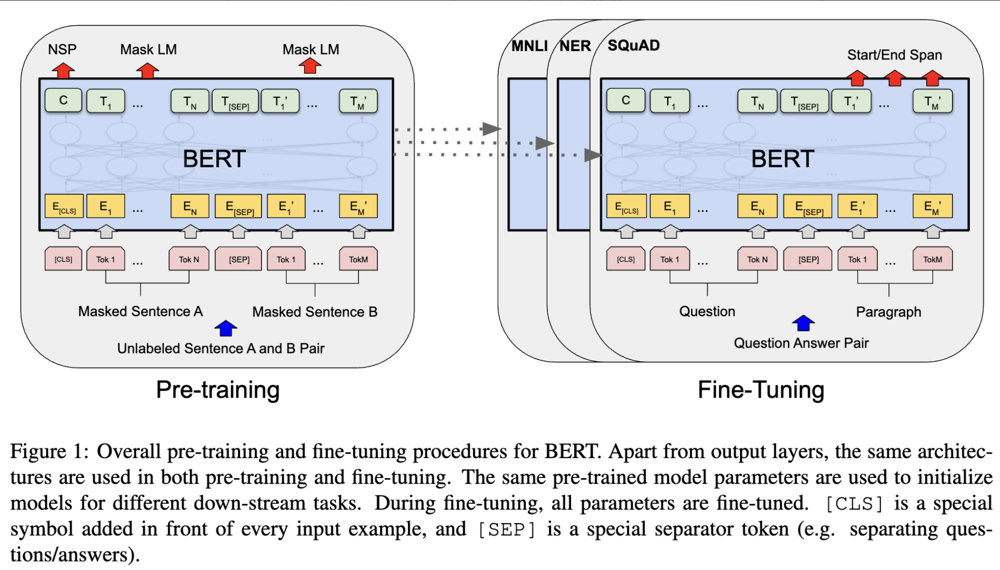
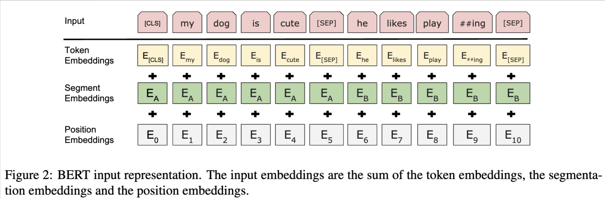

BERT¶
BERT利用Transformer的Encoder结构，通过双向掩码语言模型与句子预测进行大规模预训练，在 11 项 NLP 任务上刷新了当时的最优结果，使得 “预训练 + 微调（fine-tuning）” 的范式在 NLP 领域广为流行

BERT 在设计上：
1.仅使用 Transformer 的 Encoder，实现真正的双向建模；
2.利用 MLM（Masked LM） + NSP（Next Sentence Prediction） 的多任务预训练目标；
3.在超大规模数据（BookCorpus、Wikipedia）上训练，模型参数量庞大，性能十分优异；
4.预训练完成后，BERT 可作为“通用语义表征”提供给各类下游任务，只需添加少量层即可在分类、问答、序列标注等任务中取得绝佳效果。
BERT优势¶
-
相对 RNN / LSTM :
-
采用Transformer，可并行处理序列，且多头注意力机制更有效捕捉长距离依赖
-
双向学习上下文，比单向语言模型更充分理解词义与句义
-
相对Word2Vec:
-
BERT 生成的词向量是上下文相关的，解决了一词多义问题
-
训练规模更大、网络更深，下游任务性能更佳
-
相对 ELMo
-
ELMo 虽然采用双向 LSTM，但实际是左右两条单向 LM 特征的拼接
-
BERT 直接基于双向 Transformer，能更深入地融合全局语义
-
相对 GPT
-
GPT 是单向的（Decoder 结构），BERT 则是双向的（Encoder 结构）能充分利用上下文
-
BERT 适合理解类任务（理解上下文），GPT 更偏向生成类任务
模型结构与输入表示¶

BERT 在结构上只保留了 Transformer Encoder。它的输入格式设计成 [CLS] + Sentence A + [SEP] + Sentence B + [SEP]，以便处理单句或句子对相关任务。
同时，BERT会引入三种Embedding相加来获得最终的输入向量：
-
Token Embedding:通过 WordPiece 进行切分，每个子词（Token）都有一个可学习的向量表示
-
Position Embedding：明确序列中各 Token 的位置。与原始 Transformer 不同，BERT 选择可学习位置向量而非三角函数
-
Segment Embedding： 用于区分不同句子（A、B），若只有单句则所有 Token 都可视为 Segment A=0
最终输入向量：
序列长度默认512；若文本超过512，一般会进行截断或切分
BERT前馈层用GeLU激活函数
[CLS]与[SEP]¶
-
[CLS]：放在句首，用于下游分类等任务时，可以把它对应的输出向量视为整句全局表示
-
[SEP]：分隔标记，若是句对 (A, B)，则 A 与 B 之间以及 B 的末尾都需要 [SEP]
模型超参¶
Google 官方提供 BERT-base（12 层 Encoder，768 隐层维度，12 头注意力，110M 参数）和 BERT-large（24 层，1024 隐层，16 头注意力，340M 参数）
-
BERT-base可在普通GPU上(12GB)微调
-
BERT-large 通常需要更多显存（>= 24GB）
BERT预训练任务¶
在Encoder-only 预训练任务这篇博客讲过
模型训练与微调¶
预训练¶
-
数据：BERT 使用 BookCorpus (800M 词) + 英文 Wikipedia (2,500M 词)，总计约 3.3B 字符
-
训练：大规模分布式加速（8~64 TPU 节点）
-
时间：BERT-base 官方训练约用 4 天 (16/64 TPU)
微调¶
BERT作为预训练语言模型，其本身就如同一个强大的 "特征提取器"，能够捕捉文本里丰富的语义和句法信息。 在处理下游具体任务时，不用对 BERT 的整体架构进行改动，仅需在其输出层的上方添加一个适配特定任务的小型神经网络层，也就是 "头部"，这样就能让模型适应不同类型的任务。
文本分类任务
像情感分析、主题分类这类文本分类任务，要求模型对输入文本给出一个类别标签。在这种情况下，只需在 BERT 的顶层添加一个简单的线性分类器就行。
具体操作：
把输入文本经过 BERT 编码后得到的 [CLS] 标记向量（这个向量可看作是整个句子的表示），输入到一个全连接层。
全连接层的输出维度和分类类别数量一致，接着通过 softmax 函数将输出转换为概率分布。
模型结构：
输入文本 → BERT 模型 → [CLS] 向量 → 全连接层（带 softmax 激活） → 分类标签
微调往往只需较小学习率与少量 epoch，就能取得很好的下游任务表现